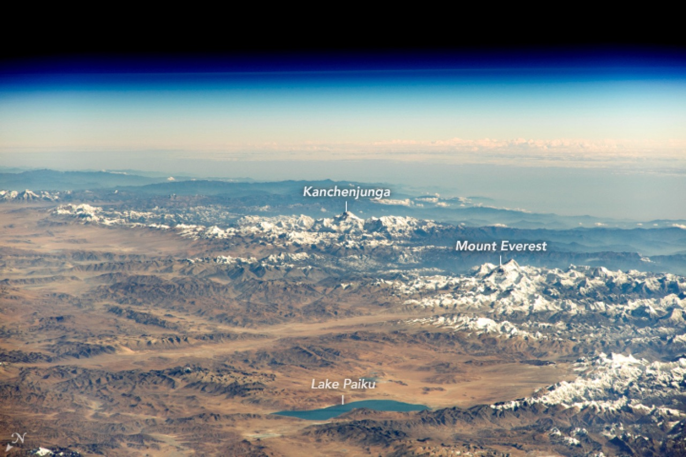
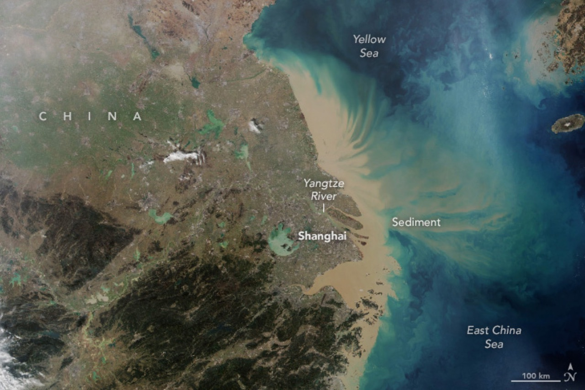

中国山河
从西向东切一条剖面，看大地怎样降低。再顺着长江找支流、湖泊和入海口。
地势三级阶梯
地势看的是一大片地区的高低趋势。从西向东，中国地势总体降低，局部仍有高山、谷地和盆地。
打开剖面仪，点「西向东示范」，拖动海拔滑块。从 A 到 B，哪里降得最明显？再找一段局部重新升高的地方。
山脉、高原和山峰
高原是一大片海拔较高的地面。山脉是一组连绵成带的山，山峰则是其中一处突出的高点。
先把青藏高原看成一片区域，再沿它南缘找喜马拉雅山脉，最后缩小到珠穆朗玛峰这个点。观察同一张影像里能不能同时认出山峰和山谷。

河流和流域
干流是河流的主干，支流从旁边汇入。流域是向同一河流或水系汇水的陆地范围，分水岭两侧的水通常流向不同水系。
到宜宾看看金沙江与岷江汇合，再打开流域显示。比较代表河道的蓝线和有面积的流域色块，想想一滴雨离干流很远时，怎样通过支流到达干流。
湖泊和河口
湘江经洞庭湖汇入长江。湖泊能接纳来水，出湖水道又把水送回河网。沿长江继续向下游走，到河水与海水相遇的长江口。
看看卫星影像里浅棕色的水怎样向东海铺开。河口水色受泥沙、潮汐等影响，单张照片只能看到拍摄时的情形。

选一条路线去验证
点一站，在图谱上定位地点。用地图里的上一站和下一站把线索连起来。